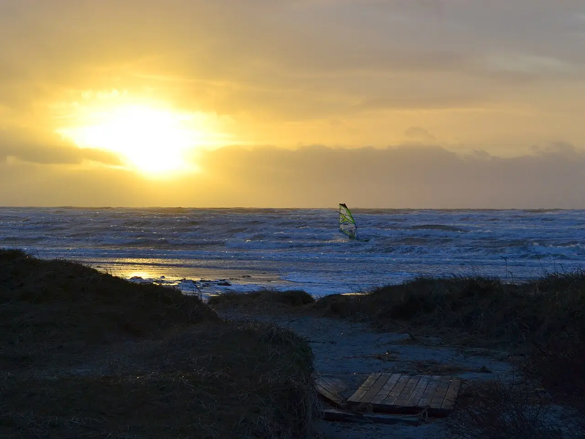

Apelviken
Varberg, Halland, Suède · windsurf, kitesurf, surf, baignade

Baie de sable peu profonde au sud de Varberg, sur la côte ouest suédoise. Plage familiale par temps calme, elle devient l’un des spots de windsurf et de kitesurf les plus connus de Suède quand le vent d’ouest se lève, avec parfois des vagues surfables.
- Lieu
- Varberg, Halland, Suède
- Niveau
- Intermédiaire
- Activités
- windsurf, kitesurf, surf, baignade
- Type d'eau
- Mer / océan
- Coordonnées
- 57.08, 12.26 (position approximative du secteur)
Dangers à connaître
- Courants sous-marins près des rochers aux deux extrémités de la baie.
- Drapeau rouge hissé quand le vent forcit : respecte-le.
Le conseil d'Ocean Buddy
Les jours de vent, installe-toi loin de la zone de baignade et respecte les couloirs de départ des écoles.
Ouvrir dans Ocean Buddy Télécharger sur l'App Store
Source : Fiche Ocean Buddy · septembre 2026 · à vérifier localement.